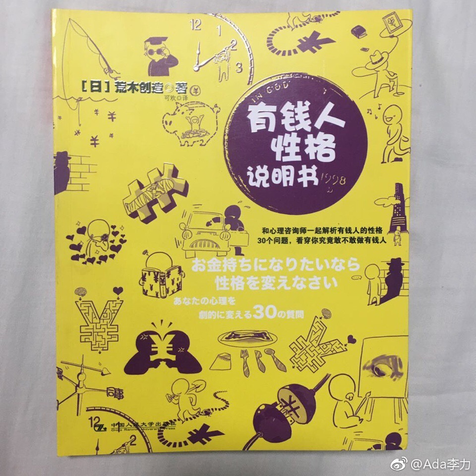

比如作者的第一个问题是：“你爱金钱胜过一切吗？”
作者说对一件事情痴迷到不考虑其它全力以赴的人是很少的。世界上大多数人实际上从行动上看，什么都不喜欢。为金钱痴迷并全力以赴的人，大概率会成为有钱人，但这种人很少，更多人只是嘴上说爱钱而已，有些人更是连说爱钱的勇气都没有。
还有这个问题“你可以为了金钱舍弃名誉吗？”
作者说如果你想成为有钱人的话，必须抛弃所谓的名誉。很多情况下，追求名誉的心理与赚钱的欲望是对立的。- 追求名誉之路很容易，追求金钱之路荆棘密布。
书中的其它问题，列出几个印象深的：
“你能忍受被他人讨厌吗？- 有钱人被人讨厌很常见
“你有自己的商业哲学吗？” - 在成为有钱人的路途只，不要固执于自己的信念，个性和信念没有任何作用，一旦获得有钱人地位之后，自律这类哲学就很重要了。
“你受异性欢迎吗？” - 年轻时受异性欢迎的男性，成为有钱人的概率低。
“你在成长过程中有压抑的经历吗？” - 有优雅品味的人做的生意没有办法发展成大买卖。满足一般人城市人需求，也是更低一层的农村人才能做到，因为那就是他们的梦想。
书中最后一段引用的熊彼得的话“改变现实社会的既不是政治家，也不是革命家，更不是学者，而是以赚钱为目标，辛辛苦苦工作的商人们”
这是读起来很有意思的一本书。
- 